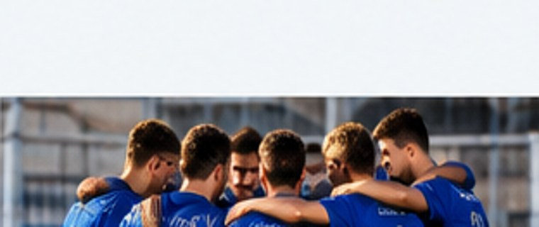

WE LEARN
Learning the fundamentals of football comes first.
A modern introduction to our youth teams and approach to developing young footballers.
CONTACT →
Learning the fundamentals of football comes first.
Respect, teamwork and participation on and off the pitch.
Personal growth and a love of sport.
Illustrative team listing — official age groups and schedules are pending.
Illustrative team listing — official age groups and schedules are pending.
Illustrative team listing — official age groups and schedules are pending.
Illustrative team listing — official age groups and schedules are pending.
Registration details will be added after confirmation by the club.
LEARN MORE →